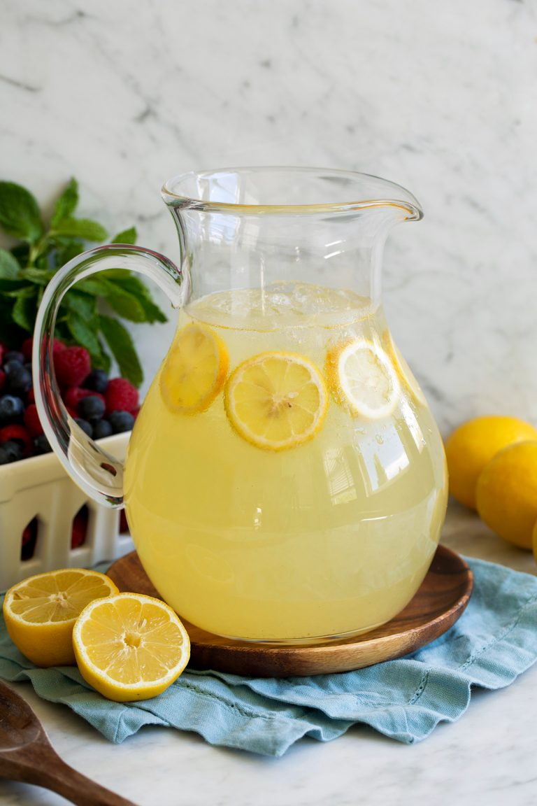

This is a very refreshing drink!
In a small saucepan, combine sugar and 1 cup water.
Bring to boil and stir to dissolve sugar. Allow to cool to room temperature, then cover and refrigerate until chilled.
Remove seeds from lemon juice, but leave pulp. In pitcher, stir together chilled syrup,
lemon juice and remaining 7 cups water.